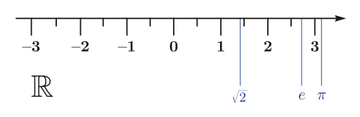

Format integers and decimals
Source:vignettes/format_integers_and_decimals.Rmd
format_integers_and_decimals.Rmd
Real number line by
User:Phrood~commonswiki,
Public domain, via Wikimedia Commons
{kind=link}
If we use format_power() to create powers-of-ten
notation in a table, the font face and size of these values do not
necessarily match that of unformatted numbers.
The purpose of format_decimal() is to surround decimal
numbers and integers with inline math delimiters to match the
powers-of-ten font face and size in rendering an R Markdown or Quarto
Markdown output document.
format_decimal()
Given a number, a numerical vector, or a numerical column from a data
frame, format_decimal() converts the numbers to character
strings of the form,
"$a$" The user can specify the number of decimal places.
Arguments.
x Numerical vector to be formatted. Can be a scalar, a vector, or a column from a data frame.
digits Positive integer to specify the number of decimal places. Default is 4. Zero renders the number as an integer.
big_mark Character. If not empty, used as mark between every three digits before the decimal point. Applied as the
big.markargument offormatC().delim Character vector of length one or two defining the math markup delimiters. Possible values include
"$"or"\\(", both of which create appropriate left and right delimiters. Custom delimiters can be assigned if required by one’s TeX processor.
If you are writing your own script to follow along, we use these packages in this vignette:
library("formatdown")
library("data.table")
#> Warning: package 'data.table' was built under R version 4.3.2
library("knitr")Practice data table
Using the atmos data set include with
formatdown with various atmospheric properties as a
function of height above sea level.
# Data set included with formatdown
DT <- copy(atmos)
# Render in document
knitr::kable(DT, align = "r")| alt | temp | pres | dens | sound |
|---|---|---|---|---|
| 0 | 288.15 | 101300.00 | 1.23e+00 | 340.29 |
| 10000 | 223.25 | 26500.00 | 4.14e-01 | 299.53 |
| 20000 | 216.65 | 5529.00 | 8.89e-02 | 295.07 |
| 30000 | 226.51 | 1197.00 | 1.84e-02 | 301.71 |
| 40000 | 250.35 | 287.00 | 4.00e-03 | 317.19 |
| 50000 | 270.65 | 80.00 | 1.03e-03 | 329.80 |
| 60000 | 247.02 | 22.00 | 3.10e-04 | 315.07 |
| 70000 | 219.59 | 5.22 | 8.28e-05 | 297.06 |
| 80000 | 198.64 | 1.05 | 1.85e-05 | 282.54 |
Power-of-ten column
Of these variables, density best lends itself to powers-of-ten notation. For this range of values, a fixed exponent of \(-3\) seems to work OK.
# Apply power of ten notation to one column
DT$dens <- format_power(DT$dens, digits = 3, set_power = -3)
# Render in document
knitr::kable(DT, align = "r")| alt | temp | pres | dens | sound |
|---|---|---|---|---|
| 0 | 288.15 | 101300.00 | \(1.23\) | 340.29 |
| 10000 | 223.25 | 26500.00 | \(0.414\) | 299.53 |
| 20000 | 216.65 | 5529.00 | \(88.9 \times 10^{-3}\) | 295.07 |
| 30000 | 226.51 | 1197.00 | \(18.4 \times 10^{-3}\) | 301.71 |
| 40000 | 250.35 | 287.00 | \(4.00 \times 10^{-3}\) | 317.19 |
| 50000 | 270.65 | 80.00 | \(1.03 \times 10^{-3}\) | 329.80 |
| 60000 | 247.02 | 22.00 | \(0.310 \times 10^{-3}\) | 315.07 |
| 70000 | 219.59 | 5.22 | \(0.0828 \times 10^{-3}\) | 297.06 |
| 80000 | 198.64 | 1.05 | \(0.0185 \times 10^{-3}\) | 282.54 |
Integer column
I treat the altitude as an integer, convert from meters to kilometers, and format in integer form (zero decimal places).
# Format one column as an integer
DT$alt <- format_decimal(DT$alt / 1000, 0)
# Render in document
knitr::kable(DT, align = "r")| alt | temp | pres | dens | sound |
|---|---|---|---|---|
| \(0\) | 288.15 | 101300.00 | \(1.23\) | 340.29 |
| \(10\) | 223.25 | 26500.00 | \(0.414\) | 299.53 |
| \(20\) | 216.65 | 5529.00 | \(88.9 \times 10^{-3}\) | 295.07 |
| \(30\) | 226.51 | 1197.00 | \(18.4 \times 10^{-3}\) | 301.71 |
| \(40\) | 250.35 | 287.00 | \(4.00 \times 10^{-3}\) | 317.19 |
| \(50\) | 270.65 | 80.00 | \(1.03 \times 10^{-3}\) | 329.80 |
| \(60\) | 247.02 | 22.00 | \(0.310 \times 10^{-3}\) | 315.07 |
| \(70\) | 219.59 | 5.22 | \(0.0828 \times 10^{-3}\) | 297.06 |
| \(80\) | 198.64 | 1.05 | \(0.0185 \times 10^{-3}\) | 282.54 |
Decimal columns
The temperature and speed of sound columns can both be formatted to
one decimal place. Use lapply() to format multiple columns
in the same way.
# Name the columns to be formatted
cols_to_format <- c("temp", "sound")
# Use data.table .SD syntax with lapply()
DT[, (cols_to_format) := lapply(.SD, function(x) format_decimal(x, 1)), .SDcols = cols_to_format]
# Render in document
knitr::kable(DT, align = "r")| alt | temp | pres | dens | sound |
|---|---|---|---|---|
| \(0\) | \(288.1\) | 101300.00 | \(1.23\) | \(340.3\) |
| \(10\) | \(223.2\) | 26500.00 | \(0.414\) | \(299.5\) |
| \(20\) | \(216.7\) | 5529.00 | \(88.9 \times 10^{-3}\) | \(295.1\) |
| \(30\) | \(226.5\) | 1197.00 | \(18.4 \times 10^{-3}\) | \(301.7\) |
| \(40\) | \(250.3\) | 287.00 | \(4.00 \times 10^{-3}\) | \(317.2\) |
| \(50\) | \(270.6\) | 80.00 | \(1.03 \times 10^{-3}\) | \(329.8\) |
| \(60\) | \(247.0\) | 22.00 | \(0.310 \times 10^{-3}\) | \(315.1\) |
| \(70\) | \(219.6\) | 5.22 | \(0.0828 \times 10^{-3}\) | \(297.1\) |
| \(80\) | \(198.6\) | 1.05 | \(0.0185 \times 10^{-3}\) | \(282.5\) |
Different formats in different ranges
The pressure column spans several orders of magnitude. I format these numbers differently depending on the range they occupy. For numbers in the thousands, I add a “big mark” to make them easier to read.
# Hundreds and higher, integers. Create a temporary variable
DT[pres > 99, temp_pres := format_decimal(pres, 0, big_mark = ",")]
# Units place or lower, 2 decimal places
DT[pres <= 10, temp_pres := format_decimal(pres, 2)]
# In-between those two ranges, 1 decimal place
DT[pres > 10 & pres <= 99, temp_pres := format_decimal(pres, 1)]
# Overwrite the original and delete the temporary column
DT[, pres := temp_pres]
DT[, temp_pres := NULL]
# Render in document
knitr::kable(DT, align = "r")| alt | temp | pres | dens | sound |
|---|---|---|---|---|
| \(0\) | \(288.1\) | \(101,300\) | \(1.23\) | \(340.3\) |
| \(10\) | \(223.2\) | \(26,500\) | \(0.414\) | \(299.5\) |
| \(20\) | \(216.7\) | \(5,529\) | \(88.9 \times 10^{-3}\) | \(295.1\) |
| \(30\) | \(226.5\) | \(1,197\) | \(18.4 \times 10^{-3}\) | \(301.7\) |
| \(40\) | \(250.3\) | \(287\) | \(4.00 \times 10^{-3}\) | \(317.2\) |
| \(50\) | \(270.6\) | \(80.0\) | \(1.03 \times 10^{-3}\) | \(329.8\) |
| \(60\) | \(247.0\) | \(22.0\) | \(0.310 \times 10^{-3}\) | \(315.1\) |
| \(70\) | \(219.6\) | \(5.22\) | \(0.0828 \times 10^{-3}\) | \(297.1\) |
| \(80\) | \(198.6\) | \(1.05\) | \(0.0185 \times 10^{-3}\) | \(282.5\) |
knitr::kable() options
I use some knitr::kable() arguments to change the header
and add a caption.
# Render in document
knitr::kable(DT,
align = "r",
caption = "Table 1. Atmospheric varables as a function of altitude",
col.names = c(
"Altitude [km]",
"Temperature [K]",
"Pressure [Pa]",
"Density [kg/m$^3$]",
"Speed of sound [m/s]"
)
)| Altitude [km] | Temperature [K] | Pressure [Pa] | Density [kg/m\(^3\)] | Speed of sound [m/s] |
|---|---|---|---|---|
| \(0\) | \(288.1\) | \(101,300\) | \(1.23\) | \(340.3\) |
| \(10\) | \(223.2\) | \(26,500\) | \(0.414\) | \(299.5\) |
| \(20\) | \(216.7\) | \(5,529\) | \(88.9 \times 10^{-3}\) | \(295.1\) |
| \(30\) | \(226.5\) | \(1,197\) | \(18.4 \times 10^{-3}\) | \(301.7\) |
| \(40\) | \(250.3\) | \(287\) | \(4.00 \times 10^{-3}\) | \(317.2\) |
| \(50\) | \(270.6\) | \(80.0\) | \(1.03 \times 10^{-3}\) | \(329.8\) |
| \(60\) | \(247.0\) | \(22.0\) | \(0.310 \times 10^{-3}\) | \(315.1\) |
| \(70\) | \(219.6\) | \(5.22\) | \(0.0828 \times 10^{-3}\) | \(297.1\) |
| \(80\) | \(198.6\) | \(1.05\) | \(0.0185 \times 10^{-3}\) | \(282.5\) |